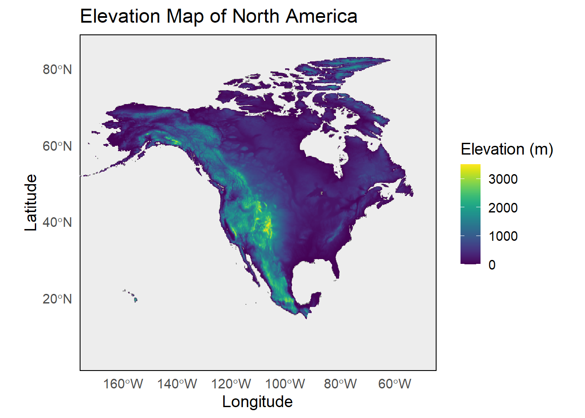
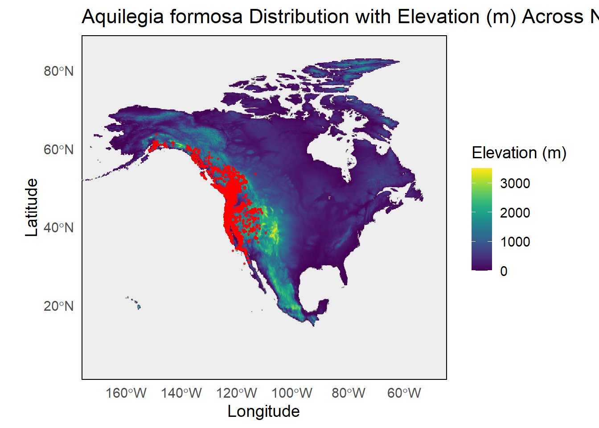
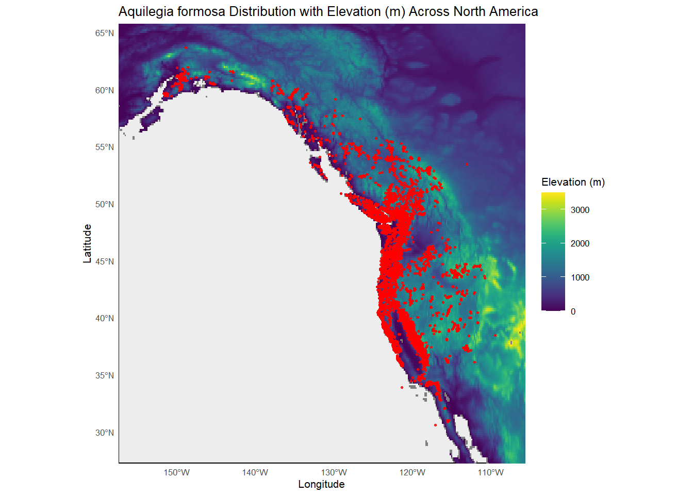

The Aquilegia genus, or more commonly known as the Columbine, is a group of perennial flowers that are found worldwide. Aquilegia species have evolved modified petals, called spurs, which contain nectar. This modification has likely led to the recent adaptive radiation of the genus due to pollinator shifts. The recent rapid speciation, interesting floral morphology, and pollinator diversity has made Aquilegia species model organisms to study a variety of ecological processes. In light of the rapidly changing climate, however, how will the distribution of Aquilegia species change?
In an attempt to look at this issue, I will perform a Species Distribution Model (SDM) for Aquilegia formosa, or more commonly known as Western Columbine.
This part of the report will serve as an introduction to the data. It’ll begin with using the leaflet package to generate an interactive map of the distribution of the species, then move into mapping the elevation of the areas within the range of Aquilegia formosa. The final part will be to map the Aquilegia formosa observations onto the elevation map, then zoom in on the range of Aquilegia formosa.
Load in the libraries:
library(ggplot2)
Warning: package 'ggplot2' was built under R version 4.3.3
library(sf)
Warning: package 'sf' was built under R version 4.3.3
Linking to GEOS 3.11.2, GDAL 3.8.2, PROJ 9.3.1; sf_use_s2() is TRUE
library(elevatr)
Warning: package 'elevatr' was built under R version 4.3.3
elevatr v0.99.0 NOTE: Version 0.99.0 of 'elevatr' uses 'sf' and 'terra'. Use
of the 'sp', 'raster', and underlying 'rgdal' packages by 'elevatr' is being
deprecated; however, get_elev_raster continues to return a RasterLayer. This
will be dropped in future versions, so please plan accordingly.
library(terra)
Warning: package 'terra' was built under R version 4.3.3
terra 1.7.83
library(giscoR)
Warning: package 'giscoR' was built under R version 4.3.3
library(leaflet)
Warning: package 'leaflet' was built under R version 4.3.3
Super cool! The observations of Aquilegia formosa run along the west coast of the US, Canada, and upper Mexico. It seems like that is around the range of the Rocky Mountains, so let’s look at the elevation across the US, Canada, and Mexico.
Get the elevation data:
North_America_Elevation <- elevatr::get_elev_raster(locations = North_America_sf, z =2, clip ="locations")
Mosaicing & Projecting
Clipping DEM to locations
Note: Elevation units are in meters.
Convert data into ggplot-compatible versions for further mapping:
Plot the map of North America showing the elevation data:
ggplot2::ggplot(data = Elevation_DataFrame, aes(x = Longitude, y = Latitude, fill = Elevation)) +geom_raster() +scale_fill_gradientn(name ="Elevation (m)",colors = viridis::viridis(n =100), limits =c(0, 3500)) +labs(title ="Elevation Map of North America", x ="Longitude", y ="Latitude", ) +theme_minimal(base_size =14) +theme(panel.background =element_rect(fill ="gray93"), panel.grid =element_blank(),legend.key =element_rect(fill ="white", color =NA) ) +coord_sf(crs ="+proj=longlat +datum=WGS84 +no_defs", xlim =c(-170, -50), ylim =c(5, 85) )
Warning: Raster pixels are placed at uneven horizontal intervals and will be shifted
ℹ Consider using `geom_tile()` instead.

Add the Aquilegia formosa data onto this map:
ggplot2::ggplot(data = Elevation_DataFrame) +geom_raster(aes(x = Longitude, y = Latitude, fill = Elevation)) +scale_fill_gradientn(name ="Elevation (m)",colors = viridis::viridis(n =100), limits =c(0, 3500)) +geom_sf(data = Aquilegia_Distribution_sf, aes(geometry = geometry), color ="red",size =0.5, alpha =0.8) +labs(title ="Aquilegia formosa Distribution with Elevation (m) Across North America",x ="Longitude", y ="Latitude" ) +theme_minimal(base_size =14) +theme(panel.background =element_rect(fill ="gray93"), panel.grid =element_blank(),legend.key =element_rect(fill ="white", color =NA) ) +coord_sf(crs ="+proj=longlat +datum=WGS84 +no_defs", xlim =c(-170, -50), ylim =c(5, 85) )
Warning: Raster pixels are placed at uneven horizontal intervals and will be shifted
ℹ Consider using `geom_tile()` instead.

Crop the map to show only the range of Aquilegia formosa:
ggplot2::ggplot(data = Elevation_DataFrame) +geom_raster(aes(x = Longitude, y = Latitude, fill = Elevation)) +scale_fill_gradientn(name ="Elevation (m)",colors = viridis::viridis(n =100), limits =c(0, 3500)) +geom_sf(data = Aquilegia_Distribution_sf, aes(geometry = geometry), color ="red",size =0.5, alpha =0.8) +labs(title ="Aquilegia formosa Distribution with Elevation (m) Across North America",x ="Longitude", y ="Latitude" ) +theme_minimal(base_size =8) +theme(panel.background =element_rect(fill ="gray93"), panel.grid =element_blank(),legend.key =element_rect(fill ="white", color =NA) ) +coord_sf(crs ="+proj=longlat +datum=WGS84 +no_defs", xlim =c(-155, -108), ylim =c(29, 64) )
Warning: Raster pixels are placed at uneven horizontal intervals and will be shifted
ℹ Consider using `geom_tile()` instead.

After getting this feel for the data, let’s see if I can perform an SDM using the Generalized Linear Model (GLM). This will be attempted in the second quarto document.